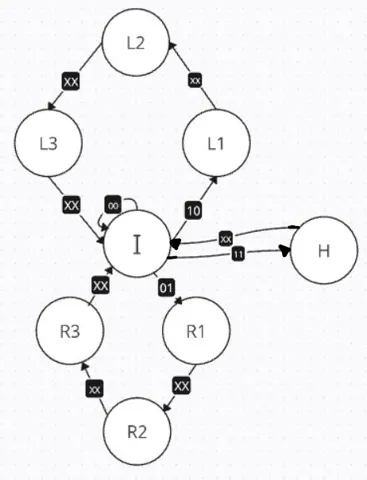
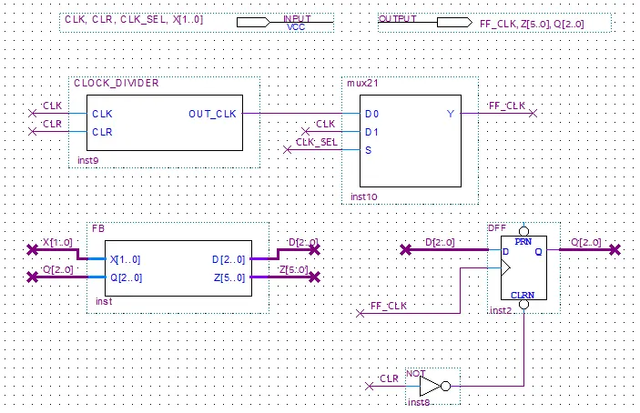
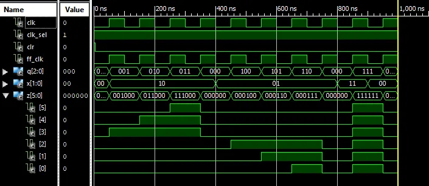

Sequential tail light controller
A Moore state machine modeled on 1966 Ford Thunderbird turn signals. Eight states stored in three D flip-flops drive six lights through idle, left, right, and hazard sequences that run to completion once triggered. Next-state and output equations were minimized in Logic Friday, written in Verilog in Quartus Prime, checked in simulation, then run on an FPGA board with a clock divider slowing the 50 MHz clock to a visible rate. Hardware behavior matched simulation.


